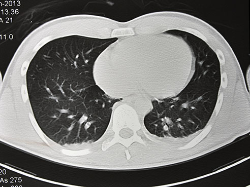

A passionate Data Scientist with a background in Information Science & Engineering and advanced studies at Loyola University Chicago, my expertise lies in Python, R and SQL.
I excel in ANALYZING large datasets, building STATISTICAL & MACHINE LEARNING models, and crafting DATA VISUALIZATIONS. Passionate about continuous learning and applying data science for social good, I'm ready to tackle real-world challenges. Let's turn data into insights together!

currently developing a recommendation system for an e-commerce platform that enhances customer acquisition and retention. This system includes popularity-based recommendations for new customers, model-based collaborative filtering based on purchase history and ratings, and text-based clustering for businesses with no purchase data.
Exploratory Data analysis of the meteor strikes from the year 1958. The project aims on exploring the patterns of the meteor strikes and visually analysing the dataset.
Comprehensive analysis of the Android app market by comparing over ten thousand apps in Google Playstore across different categories.
Predicting the number of bikes needed on a specific day based on environmental and calender factors to allow the capital bike sharing system to optimize expected bike maintenance and traffic.

Analysis of patterns in Terror attacks on India using data visualisation approach.

Modeling stock market using Deep Convolutional Neural Networks to predicts the future trend of stock selections
Detailed analysis to understand the distribution of UFO sightings, popular shapes, and any temporal patterns that might exist in the reported UFO sightings.
Attempt to build a complete healthcare database management system of Fylpe using PostGre SQL and ORM MongoDB Atlas.

Journal published on "International Journal of Application or Innovation in Engineering & Management (IJAIEM)".